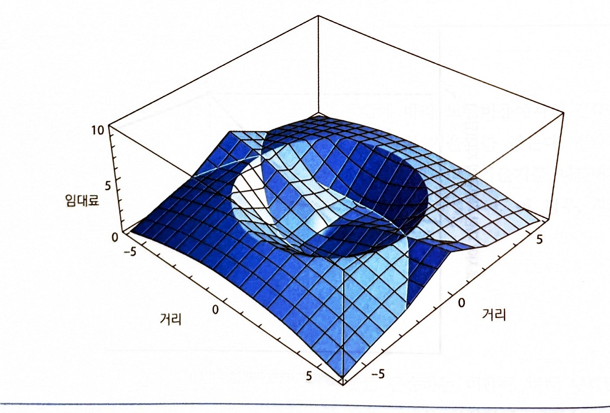
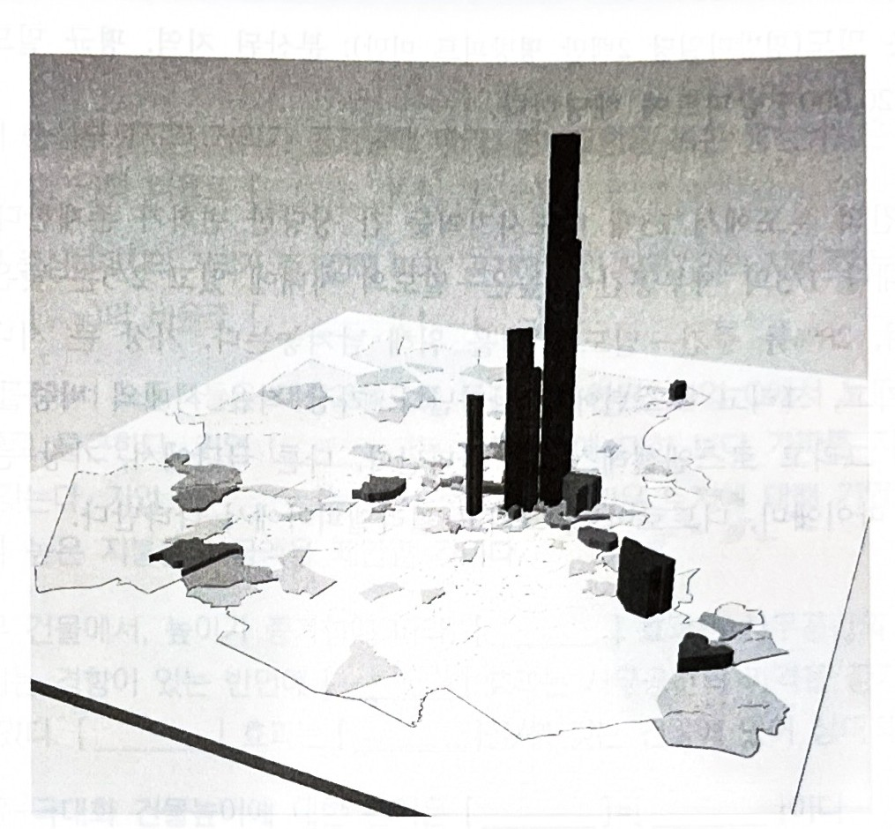
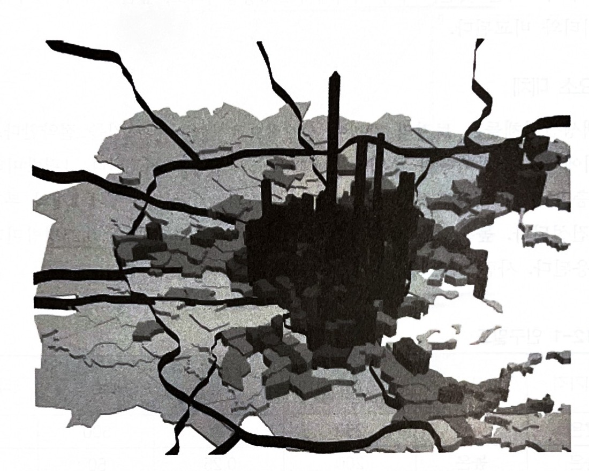

6주차. 도시토지이용과 분포
지난 시간: 도시노동시장
→ 지난 시간까지는 노동자와 기업이 얼마나 모이는지를 봤음. 오늘은 그들이 어디에 자리 잡는지, 즉 토지시장으로 옮겨 감
10장 농업·제조업 토지 · 11장 사무공간과 건물높이 · 12장 주택과 주거용 토지
“토지에 있어서의 고민거리는 그들이 더 이상 이것을 만들지 않는다는 것이다.” — 윌 로저스
고정된 공급의 토지에 대한 경쟁은 토지가 잔여재산분배청구권자임을 의미함
- 토지 임대료는 기업의 총 수입에서 생산의 비토지 비용을 뺀 것과 동일함
- 지주는 기업이 다른 생산요소들에 대해 모두 지불한 이후에 남은 것을 얻음
- 농업용 토지의 가격은 비옥도를, 제조업용 토지의 가격은 접근성을 반영함
01 비옥도와 잉여의 원칙
농업용 토지의 가격은 무엇이 정하는가 · 교재 p.195~200
지대이론: 지대의 개념
지대의 개념
순수(경제적) 지대:일정기간 동안 토지를 사용하는 가격
계약(상업적) 지대:(기계, 자동차, 건물 등) 내구재 서비스에 대한 단위 시간당 지불된 가격
순수지대와 계약지대 관계
- 토지 생산성을 임차인과 소유자가 잘 알며 토지 소유가 독점되지 않아 임차인과 소유자가 대등한 협상이 가능하다면 (완전경쟁시장 가정), 계약지대가 순수지대에 수렴
- 계약지대 > 토지지대: 임차인은 두 차이 만큼 토지 외 생산요소들을 삭감할 수 밖에 없음 → 임차인의 경쟁력 약화
- 계약지대 < 토지지대: 임차인은 비정상적인 이윤 향유, 다른 임차인들의 수요 증가
지대이론: 고전학파와 신고전학파
지대론 논쟁: 지대를 잉여로 보는 견해(고전 경제학)와 비용으로 보는 견해(신고전 경제학)가 나뉨
고전 경제학적 지대 이론: 지대는 잉여소득. 생산에 필요한 최소공급가격(혹은 기회비용) 이상으로 생산요소(자본, 노동, 토지)에 대한 초과 지불
| 구분 | 고전학파의 지대이론 | 신고전학파의 지대이론 (19C 이후) |
|---|---|---|
| 이론적 배경 | 생산비가치설(노동가치설) 기반 소득분배 중심 | 한계효용이론에 기반한 자원의 효율적 이용 중심 |
| 경제현상 | 경제현상을 사회전체 입장에서 분석 | 개별경제주체 입장에서 분석 |
| 생산요소로서 토지 | 순수지대를 주장 (일반재와 다른 특수한 재화) | 토지는 여러 생산요소 중 하나, 준지대, 대체관계 |
| 지대의 성격 | GDP 중 생산요소의 대가 지불 후 남은 잉여분 | 토지의 한계생산가치 |
| 생산물가격과 관계 (주요논쟁) | 지대는 생산물 가격에 의해 결정된 소득. 가격을 결정하는 비용은 아님 ∴ 지가는 상품가격에 영향을 주지 않음 | 지대를 생산요소의 대가로 해석. 한계생산가치가 균등해 지는 수준에서 결정되므로, 지대는 기회비용으로 생산물가격에 영향을 줌 |
| 정당성 | 지대는 잉여이며 불로소득임. 사회정의를 위해 불로소득인 지대를 환수해야 함 | 생산요소 가치는 생산에 기여한 정도에 따라 결정. 잉여 없음 (경제적 이윤 = 0) |
데이비드 리카르도
데이비드 리카르도(1817), 「정치경제학과 과세의 원리에 대하여」
비교우위론 · 자유무역이론 기반 마련
“한 나라가 아무리 넓어도 토질이 메마르고 식량 수입이 금지되어 있으면, 최소한의 자본의 축적이라도 이윤율의 커다란 하락과 지대의 급속한 상승을 가져올 것이다.” (p.136~137)
노동가치설 · 고전경제학의 핵심 화두
“한 상품의 가치, 즉 그것과 교환될 다른 상품의 수량은 그 상품의 생산에 필요한 상대적 노동량에 달려 있는 것이지, 그 노동에 지불되는 보상의 크고 작음에 달려 있는 것이 아니다.” (p.23~26)
차액지대론 · 지대 이론의 출발점 (지대: 토지의 수확체감 때문)
“토지의 사용에 대해 지대가 조금이라도 지불되는 것은 토지가 양적으로 무한하지 않고 질적으로 균일하지 않기 때문이며, 인구가 증가하면서 질이 열등한 토지 또는 위치상의 이점이 적은 토지가 경작되어야 하기 때문이다.” (p.69~72)
데이비드 리카르도 생애
- 영국 런던 출생 (1772.04.18)
- 암스텔담 히브리학교 입학 (1783)
- 증권거래소 취직 (1786)
- A. 스미스의 「국부론」 만남 (1799)
- 경제평론가 (1809)
- 영국 하원의원 (1819)
- 타계 (1823.09.11)
리카르도의 차액지대 이론
- 리카르도의 지대: 토지의 고유한 그리고 파괴 불가능한 능력을 사용하는 대가를 지주에게 지불하는 것
- 고전적 관점: 지대는 더 개선될 수 없는 상태의 토지를 사용한 대가에 대한 지불
- 리카르도 지대: 전적으로 토지의 수요가 결정 (공급고정: 옥수수 재배를 위한 단일 용도로 가정)
- 리카르도: 비옥도로 토지 구분하고, 토지의 생산성 차이에 따른 지대 차이 설명
- 가장 비옥한 토지 즉 생산성이 높은 토지에 대한 선호가 가장 높음
- 가장 생산적인 토지의 지대는 생산성이 가장 낮은 토지에 대한 이점과 농민간 경쟁 반영 (차액지대)
- 지대는 토지의 산출물에 대한 수요에 좌우 = 파생 수요
농업용 토지 임대료 모형의 다섯 가정
임차 농부들이 다양한 비옥도의 토지에 옥수수를 재배하는 지역을 고려하라
- 생산물 시장에서의 완전한 경쟁 — 농부들은 가격수용자들이고, 경제적 이윤은 장기적으로 영(0)
- 공통의 생산요소 가격들 — 비토지 생산요소들(재료·노동·자본)의 가격은 지역 전체에 걸쳐 동일함
- 가장 높은 입찰자에게 토지를 임대 — 지주는 가장 높은 입찰자에게 토지를 임대함
- 영(0)의 운송비용 — 운송비용은 영(0)
- 국가수준에서의 가격들 — 모든 가격들은 국가 시장에서 결정되고 지역에서의 사건들에 영향을 받지 않음
리카르도의 차액지대 이론: 비옥도별 비용과 지대
경쟁과 잉여의 원칙
균형 토지 임대료는 총 수입에서 비토지 비용을 뺀 것과 동일함
경쟁적 환경의 경우
잠재적 농부들 간 경쟁이 개별 농부가 0의 경제적 이윤을 얻을 때까지 토지 가격을 상승시킴
→ 균형 임대료가 경제적 이윤을 영(0)으로 만들기 때문에
농부들은 상이한 농지들 간에 무차별함
→ 높은−비옥도 토지의 생산비용 절약은 보다 높은 토지비용에 의해 정확히 상쇄됨
시장진입에 제약이 존재할 경우
진(Gene)이 생산비용을 200달러만큼 줄이는 농업기술에 특허를 가지고 있다고 하자
특허 등의 진입장벽이 존재하면 700달러 수준까지 금액을 지불할 다른 농부가 없음
→ 지주는 700달러까지 지대를 받지 못하며, 특허소유자는 200달러의 경제적 이윤을 얻음
잉여의 원칙 (the leftover principle)
비옥한 토지에 대한 농부들 간 경쟁적인 입찰은
승리하는 입찰자가 영(0)의 경제적 이윤을 갖는 수준으로 토지의 가격을 상승시킴
→ 승리하는 입찰자에 의해 지불되는 임대료는 총 수입에서 비토지 비용을 뺀 것과 동일함
→ 지주는 농부가 다른 생산요소들에 대해 지불한 후에 남는 돈을 얻음
토지 임대료, 시장가치, 그리고 토지의 가격
토지 임대료
대지를 이용할 권리에 대한 연간 지불액
농부는 옥수수 재배를 위한 1헥타르의 토지를 이용하기 위해 지주에게 연간 300달러를 지불할 수 있음
시장가치
토지 소유를 위한 구입가격
옥수수 재배에 적합한 토지의 시장가치는 1헥타르당 6,000달러가 될 수 있음
토지는 소득의 흐름을 낳는 자산이며, 투자자가 지불하고자 하는 최대치는 소득 흐름의 현재가치와 동일함
시장 이자율 i = 5%라면
$PV = R/i = \$300 / 0.05 = \$6{,}000$
이 현재가치는 은행 계좌에 예치하는 것 대신에 토지에 투자하는 것의 기회비용을 반영한 것
→ 이 책에서 토지의 가격은 토지 임대료와 동의어
→ 연간 임대료를 이자율로 나누면 시장가치가, 시장가치에 이자율을 곱하면 암묵적 가격(연간 임대료)이 됨
지대의 자본화 (자본환원)
$V = \dfrac{R_1}{1+r} + \dfrac{R_2}{(1+r)^2} + \dfrac{R_3}{(1+r)^3} + \cdots$
$V = \displaystyle\sum_{i=1}^{n} \dfrac{R}{(1+r)^i} \qquad V = \dfrac{R}{r}$
V: 지가(시장가치) · R: 지대 · r: 이자율
02 제조업: 토지가격과 입지
도시환경에서는 비옥도가 아니라 접근성이다 · 교재 p.200~207
지대의 결정요인
원칙: 도시 내 토지는 가장 높은 입찰자에게 할당
지불용의를 결정하는 요소
- 농업: 비옥도
- 제조업: 접근성
제조업의 지대결정과정: 자전거 제조업체의 단순모형
- 고정된 생산요소와 생산물 수량 — 개별 기업은 1헥타르의 토지를 포함하여 고정된 양의 생산요소로 고정된 양의 자전거를 생산함
- 고정된 생산요소와 생산물의 가격 — 자전거의 가격도 중간재 생산요소의 가격도 고정되어 있음
- 중심부의 운송터미널 — 수입과 수출은 중심부의 화물터미널(기차터미널 혹은 항구)을 거침
- 도시 내 운송 — 마차를 이용함. 1킬로미터당 운송비용은 f = 10달러
- 노동비용 — 임금은 통근비용을 보상함. 중심부에서 가장 높고, 1킬로미터 이동은 노동비용을 c = 4달러만큼 감소시킴
제조업의 지대결정과정: 마차 도시
이윤 = 총 수입 − 총 비용 = 지불용의지대
→ 총 비용은 중심부에서 50달러이고 5킬로미터에서 80달러
→ 거리 1단위 증가는 운송비용을 10달러 늘리고 노동비용을 4달러 줄여 6달러의 순 증가를 가져옴
→ 중심부에서 42달러 = 92 − 50이고 1km당 6달러씩 줄어 1km에서 36달러, 5km에서 12달러가 됨
제조업의 지대결정과정: 이동비용의 역할
$r(x) = \dfrac{\text{총 수입} - \text{운송비용}(x) - \text{노동비용}(x) - \text{중간재 생산요소 비용}}{T}$
r(x)는 단위 토지당 입찰액, T는 이 기업이 점유한 토지의 양(부지 면적)
$\dfrac{\Delta r}{\Delta x} = \dfrac{-f + c}{T} = \dfrac{-10 + 4}{1} = -6\text{달러}$
→ f > c이기 때문에 제조업 지대곡선은 음(−)의 기울기를 가지며
제조업체들은 중심부 운송터미널에 가까운 부지를 다른 토지 이용자보다 높은 가격으로 입찰해 획득하였음
운송수단의 발달과 지대: 트럭의 도입
트럭도입으로 인해 단위 운송비용 f가 10달러에서 1달러로 감소한다고 하자
→ 이제 Δr/Δx = (−1 + 4)/1 = +3달러
→ 생산요소와 생산물을 운송하는 비용이 노동자를 운송하는 비용보다 낮으면
기업은 운송터미널에서 먼 토지에 더 많이 입찰하고 교외의 노동력에 가까워짐
운송수단의 발달과 지대: 순환고속도로 도시
도시간 트럭과 고속도로 체계의 결합은
중심부 항구, 철도 터미널에 대한 의존을 완화
순환도로 도시에서의 토지 임대료 표면
항구나 중심부 철도터미널이 존재하지 않으며, 제조업체들은 중간재를 수입하고 생산물을 수출하기 위해 고속도로에 의존함
도시 간 고속도로는 도시 중심부를 지나고 우회 고속도로는 도시 간 고속도로에 연결됨

오설리반, 『오설리반의 도시경제학』 제9판, 박영사, 2022, 그림 10−6 (p.206)
→ 토지에 대한 입찰가격은 순환도로에서 최고에 도달함
→ 여기서 운송비용은 영(0)이고 노동비용은 중심부에 보다 가까운 고속도로 입지에서보다 낮음
→ 순환도로를 넘어서면 노동비용이 상대적으로 낮은 비율로 감소하므로 입찰가격은 운송비용이 증가함에 따라 감소함
CHAPTER 11 사무공간과 높은 건물
10장이 제조업이 낸 지대였다면 이 장은 사무기업이 낸 값이다 · 교재 p.214~234
이제까지는 농업과 제조업이 토지에 얼마를 내는지를 봤음
이 장에서는 사무공간의 가격 · 건물의 높이 · 토지의 가격 사이의 연계를 봄
사무공간의 가격은 다른 사무기업에 가까운 곳에서 높음
건물의 높이는 공간의 가격이 높은 곳에서 높음
상업용 토지의 가격은 그 둘이 모두 높은 곳에서 높음
→ 사무공간의 가격은 위도·경도·고도 세 차원에서 각기 다름
01 사무공간의 가격
사무기업은 왜 서로 가까이 있으려 하는가 · 교재 p.214~220
정보교환 통행거리
사무기업은 암묵적 정보를 다루므로 대면접촉이 필요
이를 위해 직선상 1블록 간격의 다섯 기업은
서로 간 통행이 필요
중위 기업 C — B·D 에 1블록, A·E 에 2블록, 합 6블록
중간 기업 B·D — 합 7블록
끝점 기업 A·E — 합 10블록
→ 총 통행거리는 중위입지에서 최소가 됨
(3강에서 본 중위입지의 원리)
→ 중위입지에서 멀어지면 통행거리는
증가하는 비율로 증가함 (6 → 7 → 10)
사무공간에 대한 지불용의 = 총 수입 − 총 비용
총 수입은 입지에 따라 변하지 않는 반면 정보교환 통행비용은 중심부에서 멀수록 증가하는 비율로 늘어남
→ 지불용의 곡선은 음(−)의 기울기를 가지며 오목함 — 멀어질수록 더 큰 폭으로 떨어짐
→ 1블록에서 2블록으로 갈 때는 p(1)−p(2)만큼, 4블록에서 5블록으로 갈 때는 그보다 큰 p(4)−p(5)만큼 줄어듦
노동접근성, 임금, 사무공간에 대한 지불용의
여타 생산비용이 모든 입지에 동일하다는 가정 완화
→ 통근비용을 보상하는 임금체계
대중교통 통근자
중심부로 갈수록 낮은 정보교환 통행비용과 임금으로
기업의 지대지불용의 곡선의 기울기가 증가
자가용 통근자
중심부로 갈수록 정보교환 통행비용은 낮으나,
임금은 오히려 증가하여(교외고속도로 인근이 더 낮음)
지대지불용의 곡선의 기울기가 감소
→ 중심부 대중교통에 대한 접근성은 지불용의 곡선을
가파르게 만듦
→ 교외 노동력의 고용은 곡선을 완만하게 만듦
교재 그림 11−3. 오른쪽 아래 점은 원본에 점 d 와 같은 이름이 인쇄돼 있어 이름을 비워 두었다
02 건물높이와 토지 가격들
이슈를 수직성으로 옮긴다 · 교재 p.220~228
층이 올라가면 값이 오르는가
같은 부지에서도 층마다 가격을 다르게 만드는 두 힘
건물 내 통행비용
층이 올라갈수록 다른 기업을 만나러 가는 시간이 늘어
지불용의를 끌어내림
고도에 따른 근무환경
조망과 위상이 나아져 임금이 낮아지고
생산비용이 줄어 지불용의를 밀어올림
→ 계단 건물은 통행비용이 빠르게 늘어
근무환경 효과가 이를 이기지 못함
곡선이 계속 내려감
→ 승강기 건물은 처음 서너 층을 넘으면
통행비용이 천천히 늘어
h′ 층 위부터는 곡선이 올라감
이윤-극대화 건물높이
임대를 위해 건설기업은 몇 층으로 건물을 지을 것인가?
한계편익 — 한 층을 더 지어 거둘 수 있는 추가 수입.
곧 그 층 사무공간의 가격
한계비용 — 한 층을 더 짓는 추가 건축비.
높을수록 하중을 받치는 보강이 더 필요해
증가하는 비율로 늘어남
→ 한계편익 = 한계비용인 h* 층에서 이윤이 극대화됨
→ h* 보다 낮으면 한 층 더 짓는 것이 이득이고,
h* 보다 높으면 한 층 덜 짓는 것이 이득임
토지에 대한 지불용의
건설기업이 토지에 지불가능한 최대금액
= 토지에서 얻는 경제적 이윤 = 음영 면적
→ 건설기업들 간 경쟁이 토지의 가격을 이 면적까지 밀어올림
→ 10장에서 본 잉여의 원칙이 사무기업용 토지에서도
그대로 성립함. 경제적 이윤은 지주에게 감
토지에 대한 지불용의: 접근성의 변화
사무공간의 기준 가격(1층 공간의 가격)은 그 입지의 접근성을 반영함
중심부로 가까이 가면 기준 가격이 높아지고, 그만큼 한계편익곡선이 위로 올라감
한계의 원리는 더 높은 곳에서 충족됨: h** > h*
→ 두 곡선 사이의 음영이 넓어짐
접근성이 좋은 부지의 경제적 이윤이 더 큼
→ 높은 건물과 높은 토지가격은 함께 감
토지가격-건물높이 간 다른 관점: 생산요소 대체
고정된 양의 사무공간을 짓는 토지와 자본의 조합은 여럿임
점 s — 큰 토지(L′) 위의 낮은 건물(k′)
점 m — 중간 높이 건물
점 t — 작은 토지 위의 높은 건물. 자본이 점 s 의 대략 3배 필요함 (k‴ ≈ 3k′)
왜 자본이 더 드는가
아코디언 문제 — 위층이 아래층을 찌그러뜨림. 보강이 필요함
현수 하강 문제 — 층 사이를 오갈 수 없음. 승강기와 계단이 필요함
토지가격-건물높이 간 다른 관점: 생산요소 대체
비용-최소화 조건: 한계기술대체율 = 생산요소 가격
$MRTS = R / p_k$
R 은 토지의 가격, $p_k$ 는 자본의 가격
등량곡선의 기울기가 등비용선의 기울기와 같아지는 자리다
점 s — 먼 입지.
등비용선이 평평해 낮은 자본/토지 비율에서 접함
점 t — 접근성이 큰 입지.
등비용선이 가팔라 높은 자본/토지 비율에서 접함
→ 토지가격이 높을수록 수직건축이 더 비용최소화 조건
등비용선 셋은 각각 s·m·t 에서 등량곡선에 접한다 — 토지가 비쌀수록 등비용선이 가파르다
금융과 보험업 고용의 밀도, 보스턴, 2014
인구조사표준지역을 고용밀도만큼 밀어 올린 지도. 밀도는 1헥타르당 금융·보험 노동자수임
→ 밀도는 중심상업지역에서 가장 높음
→ 중심지로부터 멀어질수록 빠르게 감소함
앞에서 본 지불용의 곡선이 중심부에서 정점을 갖는다는 모형의 예측과 맞는다

오설리반, 『오설리반의 도시경제학』 제9판, 박영사, 2022, 그림 11−11 (p.233)
CHAPTER 12 주택가격과 주거용 토지 이용
11장까지는 기업이 공간에 내는 값이었다. 이제 가구가 내는 값이다 · 교재 p.242~265
“냉소가(cynic)가 무엇인가? 모든 것의 가격을 알면서도 그 어느 것의 가치를 모르는 사람” — 오스카 월드
헤도닉접근법에서 주택은 특성들의 묶음이고, 시장가치는 그 특성들의 가치의 합임
$V = p_B B + p_J J + p_S S + p_A A + p_C C$
B 침실의 수 · J 일자리 군집지까지의 거리 · S 지역 학교의 평균 시험성적 · A 공기의 질 · C 인근의 범죄율. $p_i$ 는 특성 i 의 암묵적 가격
→ 가격은 바람직한 특성(침실·시험성적·공기의 질)에 대해 양수, 바람직하지 않은 특성(일자리까지의 거리·범죄율)에 대해 음수임
01 일자리 접근성
일자리까지의 거리에 따라 주택의 가격은 어떻게 변하는가 · 교재 p.242~253
통근비용과 효용을 극대화하는 주택소비
$W - tx = G + P_H H$
- W: 임금 · t: 마일당 통근비용 · x: 중심지까지 거리
- G: 주거 이외의 모든 상품 · $P_H$: 면적 당 주택가격 · H: 면적
$G = (W - tx) - P_H H$
- W − tx: 통근 비용을 제외한 임금
- 예산제약선 기울기 $-P_H$
- $H_{x1}$: $X_1$ 에서 주거비 소비
만약 $X_2$ 에서 $X_1$ 으로 움직인다면
- 주택 가격은?
- 주택에 대한 소비량(면적)은?
McDonald & McMillen (2007) · 이성원 강의노트 p.163
주택-가격곡선은 직선이 아니라 볼록하다
안으로 이동하면 가격은 두 번 오름 — 통근비용이 줄어서 한 번, 소비자 대체로 한 번 더
→ 접근성이 늘면 가격이 3달러 오르는데 (6 → 9) 접근성이 줄면 1달러만 내려감 (6 → 5)
→ 회색 직선은 통근비용 변화만 반영한 것. 곡선과의 차이가 소비자 대체가 만든 웃돈임
주택-가격곡선의 기울기
균형 주택-가격곡선은 거주자가 모든 입지에 무차별하게 만듦. 이동이 낳는 두 변화가 합해서 영(0)이 되어야 함
$\Delta p \cdot h(x) + \Delta x \cdot t = 0$
$\dfrac{\Delta p}{\Delta x} = -\dfrac{t}{h(x)}$
접근성이 늘면(x 감소) 가격이 올라 주택소비 h(x)가 줄어듦. 분모가 작아지므로 기울기의 절대값이 커짐
→ 주택-가격곡선은 도시중심지에 가까울수록 가파르고, 멀어질수록 평평해짐. 그래서 볼록함
통근의 시간비용 T 를 넣으면
$\dfrac{\Delta p}{\Delta x} = -\dfrac{t+T}{h(x)}$
T 는 통행시간의 기회비용·중심지로의 통행빈도·통행속도가 정함. T 가 커지면 곡선이 더 가팔라진다
도시 중심지와 일자리 접근성

그림 12−6 고용밀도, 2014년의 보스턴

그림 12−8 2014년 보스턴에서의 지역 일자리 접근성
오설리반, 『오설리반의 도시경제학』 제9판, 박영사, 2022 (p.250, p.253)
02 범죄, 환경의 질, 학교들
일자리 말고 주택가격을 움직이는 것들 · 교재 p.254~258
범죄비용과 효용극대화
밤도둑으로부터의 재산손실이 L, 희생될 확률이 r 이면 기대비용은 그 곱임
$r \cdot L = 0.005 \times \$8{,}000 = \$40$
가처분소득은 시장소득에서 이 기대비용을 뺀 것 — 예산선의 수직절편이 40달러만큼 내려감
→ 주택가격 p* 가 주어지면 효용은 주택소비 h* 를 갖는 점 a 에서 극대화됨
→ 일자리 접근성 모형과 같은 그림임 — 통근비용 자리에 기대범죄비용을 넣은 것뿐
범죄가 낮으면 주택가격이 높다
같은 가구가 높은-범죄 지역에서 범죄가 없는 지역으로 옮긴다고 하자. 희생될 확률이 영(0)이라 절편이 w 로 올라감
내쉬균형이 되려면 주택가격이 올라 예산선이 다시 안쪽으로 기울어 원래 효용 u* 를 회복해야 함
→ 효용은 점 d 에서 극대화됨 — 원래 효용 u*, 더 높은 주택가격 p**, 더 낮은 주택소비 h**
→ 범죄의 감소가 주택가격을 증가시킴. 아무도 일방적으로 옮길 유인을 갖지 않는 자리다
→ 낮은-범죄 이웃의 거주자는 대체효과 때문에 주택을 더 적게 소비함 (h** < h*)
대기의 질과 학교도 같은 논리다
대기의 질
심하게 오염된 지역에서 덜 오염된 지역으로 옮기면 건강보호비용이 줄어 예산선이 위로 올라감
원래 효용 u* 를 회복하려면 주택가격이 올라야 함 — 덜 오염된 지역은 p** > p* 와 h** < h* 를 가짐
학교 생산성
학교의 "산출물"은 한 학년 동안 학생이 얻는 부가가치로 잴 수 있음. 시험점수의 증가가 한 측정임
더 정교한 측정은 그 학교에 1년 다녀 생기는 생애소득의 변화임
→ 한 학교의 생산성이 오르면 학령기 아동이 있는 가구가 옮겨 오려 하고, 내쉬균형을 회복하려 주택가격이 오름
03 주택생산과 주거용 토지의 가격
주택가격이 정해지면 땅값과 밀도는 따라온다 · 교재 p.258~262
주택의 이윤-극대화 수량
토지가 고정되어 있으므로 한계비용이 우상향함
한계편익은 그 부지의 주택가격 p(x′) 이라 수평임
→ 한계의 원리가 충족되는 H* 에서 이윤이 극대화됨
→ 두 곡선 사이의 음영 면적이 경제적 이윤이고,
경쟁이 이를 토지의 가격으로 바꿈 — 잉여의 원칙
주택가격이 높으면 밀도가 높아진다
한계편익곡선이 위로 올라가
한계의 원리가 더 큰 수량에서 충족됨: H** > H*
→ 단위 토지당 주택이 늘어남. 곧 주택밀도가 높아짐
→ 음영 면적이 넓어져 주거용 토지의 가격도 높아짐
04 인구밀도
가격의 공간적 차이가 밀도의 차이로 나타난다 · 교재 p.262~265
인구밀도 변화의 원천들
| 주택가격 · 토지가격 | 주택 (평방미터) | 단위 주택면적당 토지 | 주거당 토지 | 헥타르당 가구 |
|---|---|---|---|---|
| 낮은 · 낮은 | 250 | 2 | 500 | 20 |
| 높은 · 높은 | 200 | 0.25 | 50 | 200 |
소비자 대체
가구가 더 적은 평방미터를 소비
주택 250 → 200
생산요소 대체
생산업체가 토지를 아낌
주택 1평방미터당 토지 2 → 0.25
단층 주택 → 4층 주거용 구조물
인구밀도
주거당 토지 500 → 50평방미터
헥타르당 가구 20 → 200
주거(인구)밀도, 보스턴, 2005
→ 밀도는 중심지에서 가장 높음
→ 중심까지의 거리가 늘수록 밀도는 감소함

오설리반, 『오설리반의 도시경제학』 제9판, 박영사, 2022, 그림 12−16 (p.264)
05 단일도심 도시 모형
이성원 강의노트 p.159~168
단일 도심 모형
20C 초, 세계 대다수의 모든 도시는 도시 중심지역 인근에 집중됨
- 제조업 관련 기업은 도시 중심부에 입지
→ 물품의 수입과 수출 시 통행 비용 절감 목표를 위해 - 오피스 중심의 기업도 중심부에 입지
→ 빠른 의사결정과 빠른 정보교환 목적
단일 도심 모형: 단순한 가정
- 기업은 그들의 생산품을 도시 중심지에 있는 항구 또는 기차 역으로 수송하기 위한 비용 지불
- 각 고용자(노동자)는 도시 중심지까지 통근·통행에 대한 비용을 지불해야 함
- 19C의 세계 모든 도시는 대부분 단일 도심의 도시공간구조 형태를 띔
- 현재 시점 기준으로 현실성이 크지 않을 수도 있음
- 하지만 도시의 토지시장이 어떤 방식으로 작동되는지 이해하는데 도움이 됨
입찰지대곡선: 요소 대체가 없을 때
$\Pi\ (\text{에이커당 이윤}) = pQ - (cQ + txQ + R)$
- p: 최종 생산물 가격
- c: 단위 생산물 당 토지 이외의 비용
- Q: 에이커 당 생산물 수량
- t: 마일 당 배송 비용
- x: 도시 중심지까지 거리
- R: 에이커 당 지대
잉여의 원칙: 이윤이 0인 점까지 기업 진입
$R = (p - c)Q - (tQ)x$
이윤이 0일 때
단일도심도시에서의 토지이용
토지는 각 위치별 더 높은 비용을 지불할 수 있는 자에게 할당 됨
단일도심 도시의 예측
단일 도심 도시 모형을 통한 예측
- 지대(임대료), 건물 높이(현금 자본이 토지 자산으로 전환되는 정도), 단위 주택 가격, 중심지로부터 거리가 증가할수록 인구밀도 감소 정도 등을 추정할 수 있음
- 인구가 성장한다면? 임대료와 밀도 곡선을 상승시키고 도시 경계를 확장시킴
- 농업의 지대가 상승한다면? 도시 경계는 축소하면서 임대료와 밀도 곡선은 상승시킴
- 만약 통행 비용이 감소한다면 어떤 변화가 생길까?
단일도심 도시 모형: 통행비용 감소와 닫힌도시
닫힌 도시에서 통근 비용의 감소
- 역사적으로 보행에서 전차, 전차에서 기차, 기차에서 자동차로 통행수단 전환
- 주택 수요는 중심부에 가까울수록 떨어지고 외곽에 위치할수록 증가
- 통근비용 감소 시 주택가격에 대한 입찰지대곡선의 기울기는 감소
→ 주택의 지대가 하락하나, 도시 외곽의 넓은 면적 주거에 대한 선호가 더 큼
※ 참고
열린도시: 도시 외부에 대해 열려 있어 주민의 이주가 자유로운 도시
닫힌도시: 도시 내외부로의 인구이동이 불가능한 도시
단일도심 도시 모형: 통행비용 감소와 닫힌도시
- 주택수요 감소에 따라 도심부 인근 상업 가용지 증가 (밀도 감소)
- 상업용지의 지대 하락 (점선)
- 도시지역과 CBD지역 확대 예상 가능
- 도시지역은 중심성 감소
Q & A
권규상 Kyusang Kwon
(kyusang.kwon@chungbuk.ac.kr)